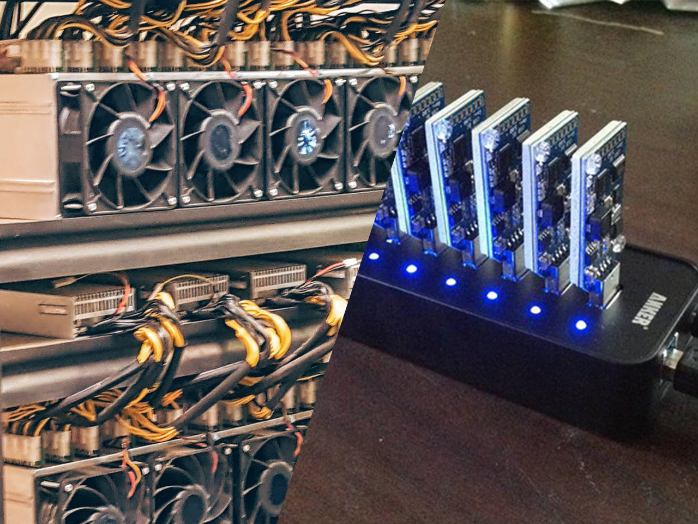
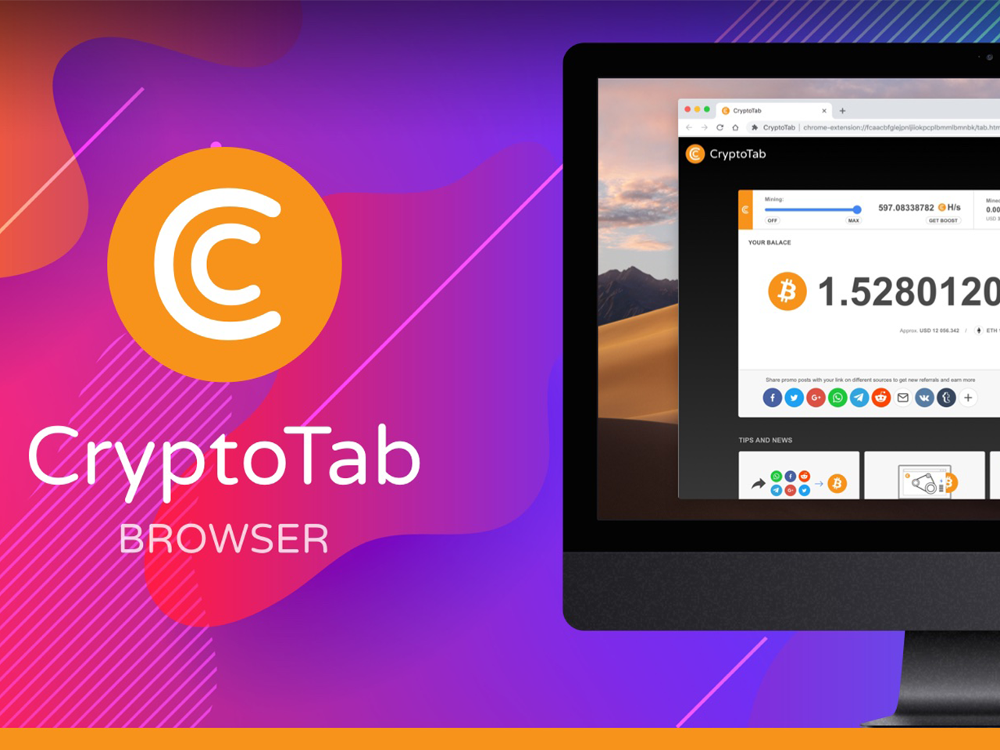

Jeder handelsübliche PC kann Bitcoins oder andere Währungen minen, indem er Rechenleistung dazu aufwendet. Dazu braucht er jeweils nur ein entsprechendes Programm, davon gibt es viele.

Mining-Hardware
Es gibt dedizierte Rechenmaschinen, die optimiert schneller Bitcoins oder Altcoins minen können, auch USB Erweiterungen gibt es.

Browser
Besonders statt Werbung für die Refinanzierung von Webserverkosten sind eingebettete Mining-Skripte beliebt, die an Nutzer einer Website verteilt werden können.
Mining Pools
Besonders beliebt ist auch die Möglichkeit, sich online in großen Pools zusammenzutun, da es alleine mittlerweile extrem lange dauern kann, eine Coin zu finden. Dadurch bekommt man weniger zufällig, also konstant immer ein wenig Geld.